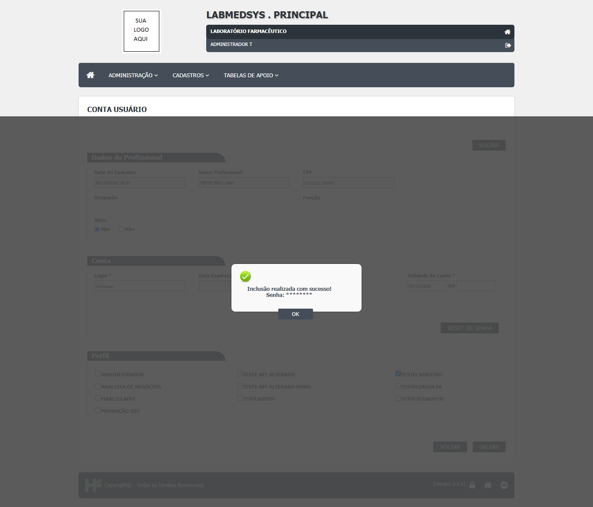
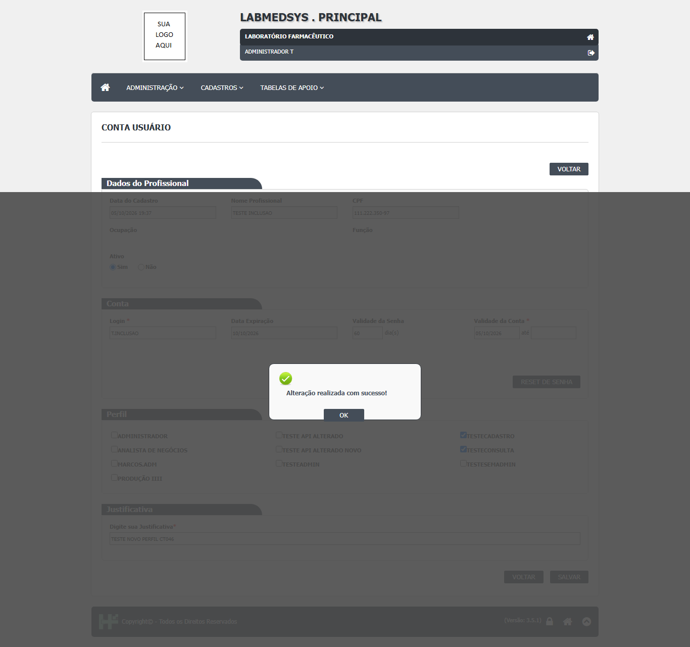
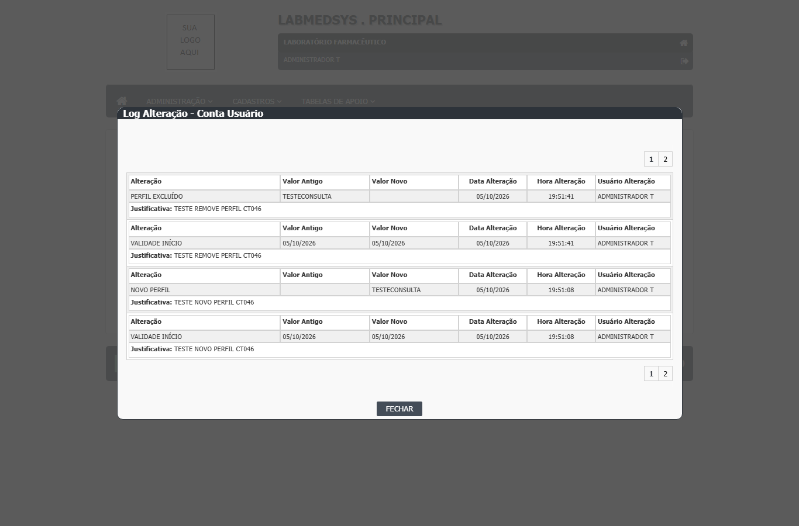
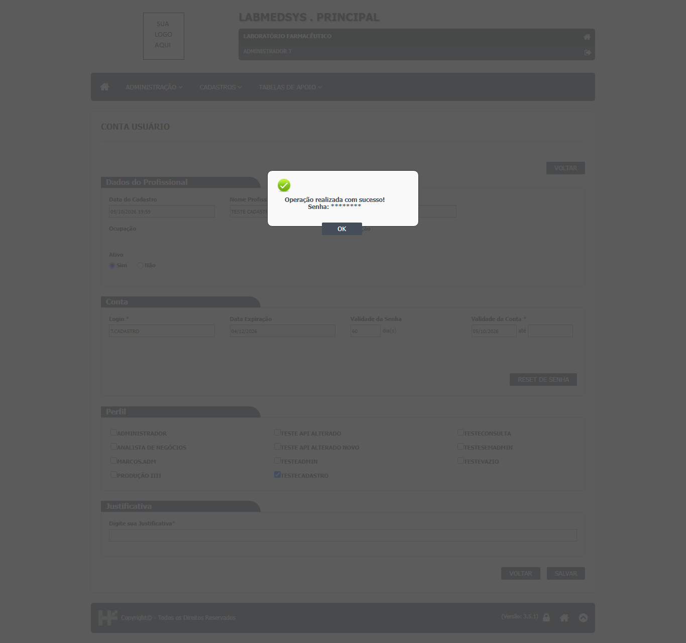
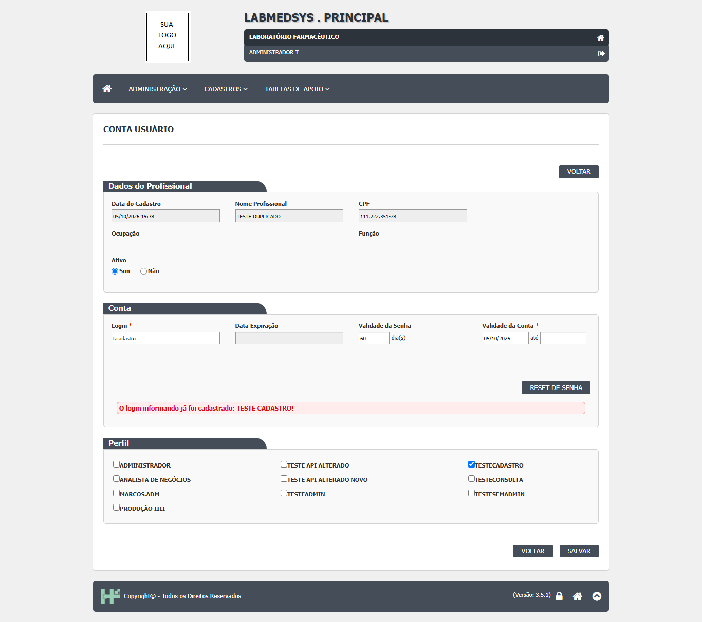
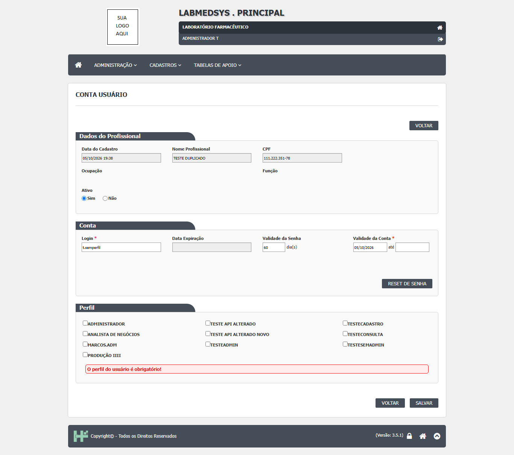

Para que serve
A Conta usuário é a tela em que o administrador cria e mantém o acesso de um profissional ao sistema: login, período de validade da conta, prazo de validade da senha, perfis (conjuntos de permissões) e situação da conta (ativa ou inativa). Também é aqui que se redefine a senha de quem a esqueceu ou foi bloqueado por erros (botão RESET DE SENHA) e que se exclui a conta (o profissional continua cadastrado, só perde o acesso). Quem usa é o administrador do sistema (TI) e, conforme a política da empresa, a Garantia da Qualidade, que responde pelo controle de acesso (leitura da área, a validar).
Quem usa e em que etapa do processo
Quem usa
- O administrador do sistema (TI) e, conforme a política da empresa, a Garantia da Qualidade, que responde pelo controle de acesso (leitura da área, a validar; Guia 33, 11.12.3).
- Todos os módulos dependem do que se grava aqui: o login único do Principal vale para os nove módulos.
- Quem pode abrir, incluir, alterar, excluir, imprimir e ver o histórico está em "Quem pode usar (permissões)", mais abaixo.
Em que etapa do processo entra (tela 2 do menu Administração, módulo Principal)
- O profissional já foi cadastrado na tela Profissional (Menu Administração › Profissional). A conta só existe para um profissional existente.
- A lista abre vazia; é preciso clicar em PESQUISAR. Para quem não é o usuário de código 1, o usuário 1 (administrador de fábrica do sistema) não aparece.
- Depois de criada a conta, o usuário recebe a senha provisória (que o administrador vê na tela) e é levado à troca de senha no primeiro acesso (CT-PRI-001, 06/10/2026).
O que acontece depois (para onde o trabalho segue)
- Incluir conta grava login, validades, perfis e uma senha provisória; mostra "Inclusão realizada com sucesso!" com a senha provisória na mensagem. Ao clicar OK volta à lista. O usuário passa a poder entrar no sistema, dentro do período de validade e com as permissões dos perfis.
- Alterar conta grava as novas validades, o prazo da senha, a situação e a lista de perfis (que é apagada e gravada de novo) e escreve o histórico. Não troca a senha.
- Reset de senha grava uma nova senha provisória com validade de 5 dias, zera o contador de erros, marca a troca obrigatória e mostra a senha na tela. Não escreve no histórico.
- Excluir conta apaga o login, a senha, as validades e todos os vínculos de perfil; o profissional permanece. A exclusão fica no histórico como "EXCLUSÃO DA CONTA", mas a tela de histórico da Conta não lista esse tipo de evento.
- Imprimir / Excel abrem o relatório da lista (
usuario_conta_rel); o ícone Imprimir Perfils de cada linha abre o relatório do usuário com os perfis dele.
Fonte: Resumo da tela e fluxo da tela (leitura do código e dos testes). O que for leitura da área precisa ser validado com a área.
Antes de começar (o que precisa existir)
| Precisa existir | Para quê | Onde se cadastra |
|---|---|---|
| O profissional cadastrado | A conta é a parte de acesso do mesmo registro do profissional; sem ele não há linha para criar conta | Menu Administração › Profissional |
| Um ou mais perfis | A conta exige pelo menos um perfil marcado; os perfis dão as permissões | Menu Administração › Perfil |
| O login desejado e o período de validade | Campos da conta | Combinados com o usuário e com a política da empresa |
| Permissão de incluir ou alterar na tela Conta usuário | Para ver o ícone Incluir ou o lápis | Menu Administração › Perfil (ver "Quem pode usar") |
Passo a passo
Situação das imagens (14/11/2026): imagens reaproveitadas dos testes de 05 e 06/10/2026 (rodadas 1 e 2), cada uma conferida contra o texto. Sem imagem: a lista de Pesquisa da Conta usuário, a lista com o ícone Incluir, o formulário de conta nova em branco, a exclusão da conta, o relatório Imprimir Perfils e a lupa Consultar. A senha provisória aparece mascarada nas imagens de teste.
Consultar a lista
- No menu Administração, abra Conta usuário. A tela mostra o quadro "Pesquisa" e nenhuma linha. Clique em PESQUISAR para listar (usuario_conta_lst.aspx.cs:85-91).
- Filtros: Nome (parte do nome), CPF, Ativo (Todas, Sim, Não) e Perfil. O filtro Ativo se refere à conta, não ao profissional (dalUsuario.cs:1522).
- A lista mostra Nome, CPF e Ativo, com os ícones: lápis (Editar), lupa (Consultar), X vermelho (Excluir conta), Log e Imprimir Perfils. Para o profissional que ainda não tem conta aparece o ícone Incluir no lugar do lápis. Dez linhas por página. Sem resultado: "A pesquisa não retornou nenhum resultado.".
Criar uma conta
- Na linha do profissional sem conta, clique em Incluir. A tela mostra os dados do profissional (somente leitura) e os quadros Conta e Perfil.
- Informe o Login (até 25 caracteres; letras sem acento, números e ponto). O sistema grava em MAIÚSCULAS e tira os espaços (usuario_conta_ed.aspx.cs:386; DV-PRI-002).
- Informe a Validade da Conta: a data inicial é obrigatória; a final é opcional e não pode ser anterior à inicial nem à de hoje.
- Deixe em 60 o prazo da Validade da Senha (em dias), se a política da empresa não disser outra coisa. A "Data Expiração" é calculada pelo sistema e não pode ser digitada.
- Marque pelo menos um Perfil.
- Clique em SALVAR e confirme com SIM ("Confirma a inclusão do item?"). A mensagem de sucesso mostra a senha provisória: anote-a e entregue ao usuário de forma reservada. Ele terá de trocá-la no primeiro acesso, em até 5 dias (CT-PRI-038 e 039).

Figura 1: aviso "Inclusão realizada com sucesso!" com a linha "Senha:" (na imagem de teste a senha aparece coberta por asteriscos); clique em OK para voltar à lista.
Alterar uma conta
- Na lista, clique no lápis. Altere o que for preciso (situação, validades, prazo da senha, perfis).
- Preencha a Justificativa (obrigatória) e salve. O histórico registra cada campo alterado.

Figura 2: conta alterada (perfis TESTECADASTRO e TESTECONSULTA marcados, justificativa preenchida) e o aviso "Alteração realizada com sucesso!".
- Para desativar o acesso sem excluir, marque Ativo: Não. Com a conta inativa, o botão RESET DE SENHA e as demais edições ficam travados (Funcoes.cs:179-250).
Ver o histórico da conta
- Na lista, clique no ícone Log. Abre a janela "Log Alteração - Conta Usuário", com o campo mudado, valor antigo e novo, data, hora, usuário e justificativa.

Figura 3: histórico da conta: "NOVO PERFIL" e "PERFIL EXCLUÍDO" (TESTECONSULTA) com justificativa, e "VALIDADE INÍCIO" com a mesma data nos dois valores (DV-PRI-005); duas páginas.
Redefinir a senha e desbloquear
- Abra a conta e clique em RESET DE SENHA; confirme com SIM ("Confirma o reset de senha?"). O sistema gera uma nova senha provisória, válida por 5 dias, zera as tentativas erradas e mostra a senha na mensagem. O usuário será levado à troca de senha ao entrar.

Figura 4: aviso "Operação realizada com sucesso!" depois do reset, com a linha "Senha:" coberta por asteriscos na imagem de teste.
- Atenção: o reset não aparece no histórico da conta (DV-PRI-017).
Excluir a conta
- Na lista, clique no X vermelho da linha. A tela pede apenas a Justificativa e o botão EXCLUIR; confirme com SIM ("Confirma a exclusão do item?"). A conta e os perfis do usuário são apagados; o profissional continua cadastrado. Não foi testado (usuario_conta_ed.aspx.cs:44-55 e 483-524).
O que acontece ao confirmar ou salvar
- Incluir conta: grava login, validades, perfis e uma senha provisória e mostra "Inclusão realizada com sucesso!" com a senha. O usuário passa a poder entrar, dentro do período de validade e com as permissões dos perfis. O histórico registra "INCLUSÃO DA CONTA" (usuario_conta_ed.aspx.cs:413-414).
- Alterar conta: grava validades, prazo da senha, situação e perfis (a lista de perfis é apagada e gravada de novo) e escreve o histórico. Não troca a senha (dalUsuario.cs:1604-1651).
- Reset de senha: grava nova senha provisória com validade de 5 dias, zera o contador de erros, marca a troca obrigatória e mostra a senha na tela; não escreve no histórico (dalUsuario.cs:1126-1155; bllUsuario.cs:714-720).
- Excluir conta: apaga login, senha, validades e todos os vínculos de perfil; o profissional permanece. O evento "EXCLUSÃO DA CONTA" é gravado, mas a tela de histórico da conta não o lista (dalUsuario.cs:1653-1689; bllUsuario.cs:1208-1213).
- Imprimir, Excel e Imprimir Perfils: abrem relatórios e não gravam nada.
O que o sistema recusa
- "O login do usuário é obrigatório!" e "A Situação é obrigatório!" (campos em branco).
- "O login informando já foi cadastrado: [nome]!" quando outro profissional já usa o login; a busca ignora maiúsculas e minúsculas (CT-PRI-042).

Figura 5: login repetido (t.cadastro): faixa vermelha "O login informando já foi cadastrado: TESTE CADASTRO!" no quadro Conta.
- "O perfil do usuário é obrigatório!" quando nenhum perfil está marcado (CT-PRI-043).

Figura 6: formulário de conta nova sem nenhum perfil marcado: faixa vermelha "O perfil do usuário é obrigatório!" no quadro Perfil.
- Datas: "A data de validade inicial da conta é obrigatória!" / "...é inválida!"; "A data de validade final da conta é inválida!"; data inicial anterior à data atual (inclusão) ou ao cadastro (alteração); data final anterior à data atual ou à inicial.
- "A Justificativa é obrigatória!" ao alterar ou excluir sem justificativa.
- "O CPF informado é inválido!" no filtro da lista, com CPF mal formado.
- Falha de banco: "Erro na inclusão / alteração / Exclusão da Conta do Usuário.", com o link "Detalhe do erro (+)".
Quem pode usar (permissões)
- A tela usa a função 95 (Conta usuário) (usuario_conta_lst.aspx.cs:22). Na lista, o lápis depende de Alterar; sem ela, quem pode incluir vê a lupa (Consultar). O X de Excluir depende de Excluir e nunca aparece na linha do usuário 1. O Log depende de Consultar log. Imprimir, Excel e Imprimir Perfils dependem de Imprimir. Quem não é o usuário 1 não vê o usuário 1 na lista.
- Ter a tela marcada no perfil já dá a consulta: a ação "Consultar" não existe na árvore de permissões.
- A lista bloqueia quem não tem a função: o usuário
t.semadminfoi levado à página de acesso negado ao digitar o endereço (CT-PRI-064). O formulário e o relatório não foram testados pelo endereço; no código, a verificação do formulário está comentada e o relatório não confere permissão (DV-PRI-025, Alta; a confirmar).

Figura 7: página "O usuário não tem permissão para acessar esta página!" mostrada ao abrir a lista da Conta usuário pelo endereço sem permissão (CT-PRI-064).
Cuidados e falhas conhecidas
- A senha provisória aparece na tela do administrador, na inclusão e no reset (DV-PRI-003, Alta). Entregue-a ao usuário de forma reservada; não a deixe na tela.
- O reset de senha não deixa registro no histórico da conta (DV-PRI-017): não há como provar quem desbloqueou o usuário.
- O histórico ganha "VALIDADE INÍCIO" com a mesma data nos dois valores a cada gravação, mesmo sem mudança (DV-PRI-005, visto na Figura 3).
- O login é sempre gravado em maiúsculas, sem regra informada ao usuário (DV-PRI-002).
- Telas administrativas abrem pelo endereço para quem não tem permissão (DV-PRI-025, Alta); para a Conta usuário só a lista foi testada e negou o acesso.
- Pelo código (ainda não testado): se o campo Validade da Senha for apagado ao incluir, a troca obrigatória pode não ser marcada; o perfil Administrador pode sumir ao alterar a conta de outra pessoa por um administrador que não seja o usuário 1; o evento "EXCLUSÃO DA CONTA" não aparece na consulta do histórico. Pontos para validar com a área.
Ícones e botões da lista
| Ícone ou botão | O que faz | Quando aparece |
|---|---|---|
| PESQUISAR | Lista os profissionais com ou sem conta, conforme os filtros | Sempre |
| LIMPAR | Esvazia filtros e lista | Sempre |
| Imprimir e Excel | Abrem o relatório da lista (o Excel perde o filtro de Perfil) | Depois de pesquisar, para quem pode imprimir |
| Incluir | Abre o formulário em branco da conta | Linha de profissional sem conta |
| Lápis (Editar) | Abre o formulário da conta | Linha com conta, para quem pode alterar |
| Lupa (Consultar) | Abre o formulário travado | Linha com conta, quando o usuário só pode incluir |
| X vermelho (Excluir) | Abre a tela de exclusão (só justificativa) | Linha com conta, para quem pode excluir; nunca na linha do usuário 1 |
| Log | Abre o histórico da conta | Linha com conta, para quem consulta o log |
| Imprimir Perfils | Abre o relatório do usuário com seus perfis | Linha, para quem pode imprimir |
Botões do formulário: SALVAR (pede confirmação e grava, incluindo ou alterando), RESET DE SENHA (conta existente e ativa) e VOLTAR (sai sem gravar).
Campos da tela
Caminhos das fontes na seção Resumo da tela. "Sim (servidor)" quando o servidor também recusa; "Só na tela" quando só o navegador confere.
| Campo na tela | Tipo | Obrigatório | Regra, limite ou valores possíveis | Fonte |
|---|---|---|---|---|
| Lista: Nome | Texto de até 255 | Não | Procura dentro do nome; o navegador só aceita letras, números e acentos | usuario_conta_lst.aspx:44-45; dalUsuario.cs:1512 |
| Lista: CPF | Máscara de 11 dígitos | Não | Igual ao CPF digitado | usuario_conta_lst.aspx:49-50; dalUsuario.cs:1517 |
| Lista: Ativo | Lista | Não | Todas, Sim, Não; vale para a conta | usuario_conta_lst.aspx:54-58; dalUsuario.cs:1522 |
| Lista: Perfil | Lista | Não | Todos os perfis, ativos ou não; o Administrador (código 1) não é oferecido | usuario_conta_lst.aspx.cs:36-44; dalPerfil.cs:514-527 |
| Dados do Profissional: Data do Cadastro, Nome Profissional, CPF | Texto travado | Não se aplica | Só leitura | usuario_conta_ed.aspx:44-54 |
| Ocupação e Função | Texto travado | Não se aplica | Mostra as ocupações (CBO) e funções profissionais do profissional, separadas por barra | usuario_conta_ed.aspx:62-85; dalUsuario.cs:641-645 |
| Ativo | Sim ou Não | Sim | "A Situação é obrigatório!"; na inclusão vem Sim | usuario_conta_ed.aspx:91-97 |
| Login | Texto de até 25 | Sim | "O login do usuário é obrigatório!"; o navegador aceita letras sem acento, números, ponto e espaço; o servidor tira os espaços e grava em maiúsculas; único no sistema | usuario_conta_ed.aspx:124-128; usuario_conta_ed.aspx.cs:386 e 397-398 |
| Data Expiração (da senha) | Texto travado | Não se aplica | Calculada: hoje mais o prazo em dias | usuario_conta_ed.aspx:133-134; dalUsuario.cs:1561 |
| Validade da Senha (dias) | Número de até 3 dígitos, padrão 60 | Não | Se vazio, o servidor usa 60; só números | usuario_conta_ed.aspx:139-143; usuario_conta_ed.aspx.cs:392 |
| Validade da Conta: de | Data | Sim | "A data de validade inicial da conta é obrigatória!"; na inclusão não pode ser anterior a hoje; na alteração, não anterior à data de cadastro | usuario_conta_ed.aspx:151-164; usuario_conta_ed.aspx.cs:35-37 e 183-186 |
| Validade da Conta: até | Data | Não | Não pode ser anterior a hoje nem à data inicial | usuario_conta_ed.aspx:168-193 |
| Perfil | Lista de marcação, 3 colunas | Sim (servidor) | Ao menos um: "O perfil do usuário é obrigatório!"; só perfis ativos; o Administrador (código 1) só aparece para o usuário 1 | usuario_conta_ed.aspx:224-228; usuario_conta_ed.aspx.cs:84-91 e 401 |
| Justificativa | Texto de até 255 | Sim, quando a conta já existe | "A Justificativa é obrigatória!"; também na exclusão | usuario_conta_ed.aspx:239-249; usuario_conta_ed.aspx.cs:323-330 |
Botões e ações
| Botão ou ação | Quando aparece | O que faz | Para onde leva | Fonte |
|---|---|---|---|---|
| PESQUISAR | Sempre, na lista | Lista os profissionais com ou sem conta, conforme os filtros | Não muda | usuario_conta_lst.aspx.cs:85-91 |
| LIMPAR | Sempre, na lista | Esvazia filtros e lista | Não muda | usuario_conta_lst.aspx.cs:93-96 e 342-348 |
| Imprimir e Excel (lista) | Depois de pesquisar, se o usuário pode imprimir | Abre o relatório da lista, com o filtro de Nome, CPF, Ativo e (só no Imprimir) Perfil | Não muda | usuario_conta_lst.aspx.cs:71-72 e 121-168 |
| Incluir | Linha de profissional sem conta | Abre o formulário em branco da conta | Não muda | usuario_conta_lst.aspx.cs:252-277 |
| Editar (lápis) | Linha com conta, se o usuário pode alterar | Abre o formulário da conta | Não muda | usuario_conta_lst.aspx.cs:237-248 |
| Consultar (lupa) | Linha com conta, quando o usuário só pode incluir | Abre o formulário travado | Não muda | usuario_conta_lst.aspx.cs:242-247 |
| Excluir (X vermelho) | Linha com conta, se o usuário pode excluir; nunca na linha do usuário 1 | Abre a tela de exclusão (só justificativa) | Não muda | usuario_conta_lst.aspx.cs:176-181 e 249 |
| Log (ícone) | Linha com conta, se o usuário tem a permissão de histórico | Abre o histórico da conta | Não muda | usuario_conta_lst.aspx.cs:191-204 e 250 |
| Imprimir Perfils (ícone) | Linha, se o usuário pode imprimir | Abre o relatório do usuário com seus perfis (RPT_USUARIO_PERFIL) | Não muda | usuario_conta_lst.aspx.cs:188-190 e 420-445 |
| SALVAR | No formulário | Pede confirmação e grava (incluir ou alterar) ou exclui, conforme o modo | Lista, depois do OK | usuario_conta_ed.aspx.cs:316-349 |
| RESET DE SENHA | Conta existente e ativa | Gera nova senha provisória e a mostra | Lista, depois do OK | usuario_conta_ed.aspx.cs:291-298 e 460-481 |
| VOLTAR (topo e rodapé) | Sempre | Volta à lista sem gravar | Lista | usuario_conta_ed.aspx.cs:281-289 |
| Detalhe do erro (+) | Quando há erro tratado | Mostra o texto interno do erro | Não muda | usuario_conta_ed.aspx.cs:300-314 |
Mensagens do sistema
As marcadas "vista em teste" aparecem no resultado das rodadas.
| Mensagem (texto exato do código) | Quando aparece | Fonte |
|---|---|---|
| A pesquisa não retornou nenhum resultado. | Pesquisa sem resultado | usuario_conta_lst.aspx:111 |
| O CPF informado é inválido! | CPF do filtro com formato inválido | usuario_conta_lst.aspx:48 |
| Confirma a inclusão do item? / Confirma a alteração do item? / Confirma a exclusão do item? / Confirma o reset de senha? | Ao clicar SALVAR, EXCLUIR ou RESET DE SENHA (vistas em teste, CT-PRI-040, 038 e 046) | usuario_conta_ed.aspx.cs:625-637 |
| A Situação é obrigatório! | Situação em branco (erro de concordância) | usuario_conta_ed.aspx:97 |
| O login do usuário é obrigatório! | Login em branco | usuario_conta_ed.aspx:125 |
| O login informando já foi cadastrado: [nome]! | Login já usado por outro profissional (vista em teste, CT-PRI-042, 05/10/2026) | usuario_conta_ed.aspx.cs:398 |
| O perfil do usuário é obrigatório! | Nenhum perfil marcado (vista em teste, CT-PRI-043, 05/10/2026) | usuario_conta_ed.aspx.cs:401 |
| A data de validade inicial da conta é obrigatória! / ...é inválida! | Data inicial em branco ou impossível | usuario_conta_ed.aspx:158-160 |
| A data de validade final da conta é inválida! | Data final impossível | usuario_conta_ed.aspx:172 |
| A data de validade inicial não pode ser inferior a data atual (inclusão) ou a data de cadastro (alteração) | Data inicial antes do limite | usuario_conta_ed.aspx.cs:37 e 186 |
| A data de validade final não pode ser inferior a data atual / a data de validade inicial! | Data final antes do limite (vista em teste, 05/10/2026: "não pode ser inferior à data atual", OBS-02) | usuario_conta_ed.aspx.cs:39; usuario_conta_ed.aspx:176-179 |
| A Justificativa é obrigatória! | Alteração ou exclusão sem justificativa | usuario_conta_ed.aspx:247 |
| Inclusão realizada com sucesso! Senha: [senha] | Depois de incluir a conta (vista em teste, CT-PRI-040, 05/10/2026) | usuario_conta_ed.aspx.cs:414 |
| Alteração realizada com sucesso! | Depois de alterar | usuario_conta_ed.aspx.cs:439 |
| Operação realizada com sucesso! Senha: [senha] | Depois do reset (vista em teste, CT-PRI-038, 06/10/2026) | usuario_conta_ed.aspx.cs:477 |
| Exclusão realizada com sucesso! | Depois de excluir a conta | usuario_conta_ed.aspx.cs:506 |
| Erro na inclusão / alteração / Exclusão da Conta do Usuário. | Falha de banco, com link "Detalhe do erro (+)" | bllUsuario.cs:818, 845 e 868 |
| Não existe log de alteração para este registro. | Histórico vazio | usuario_conta_lst.aspx:198 |
Quem pode fazer o quê
Ainda não levantado para esta tela
O quadro "Quem pode fazer o quê" é preenchido a partir de testes de tela por perfil (nível, área e etapa do registro), nunca por suposição. Esta tela ainda não passou por esse levantamento.